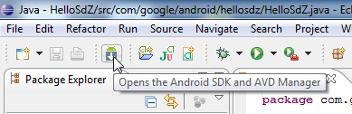
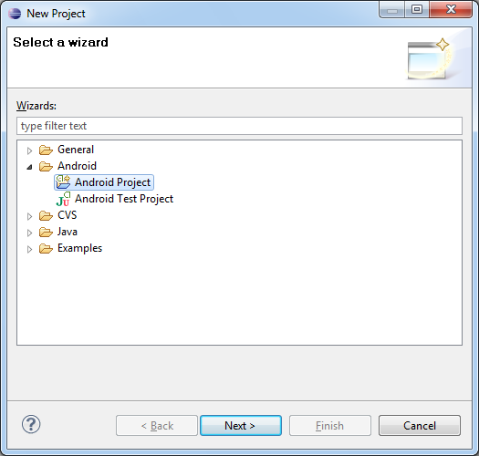

Bonjour et bienvenue dans ce mini-tutoriel consacré à Android. :)
Android est un système d'exploitation à destination des terminaux mobiles. Il équipe principalement des téléphones portables (de type smartphone) mais aussi des baladeurs ou autres tablettes. Android est édité par Google, le "géant du Web" que l'on retrouve décidément partout.
Android, tout comme l'iPhone, est en mesure d'accueillir des applications tierces. N'importe qui peut développer une application et la distribuer. C'est d'ailleurs ce qui fait la richesse des smartphones. Pour vous donner un ordre d'idée, l'Android Market (où l'on télécharge les applications) contient environ 100 000 applications.
Dans ce tutoriel, nous allons créer une application très simple pour Android : une application de type "Hello World !". Le but est de voir les bases permettant le développement. Nous verrons donc :
L'installation des outils et logiciels nécessaires (ou simplement utiles) au développement ;
Un exemple de code très simple ;
Ce tutoriel a été réalisé sur Windows. Cependant il n'y aura pas beaucoup de différences sur un autre système (Mac OS X ou GNU/Linux).
Petite précision avant de commencer : les applications Android et iOS (iPhone) ne sont pas faites de la même façon. Les deux systèmes sont différents. Une application de l'un n'est pas compatible avec l'autre. Ne vous attendez donc pas à développer quelque chose pour l'iPhone dans ce tutoriel. ;)
Comme je l'ai dit rapidement en introduction, les applications Android sont développées en Java. Si vous en avez déjà fait, vous risquez d'avoir déjà certains des outils que je vais présenter ici. Eh bien tant mieux ! C'est autant de travail en moins pour vous. ;)
Un petit mot sur Java
Java est un langage de programmation orienté objet qui a la particularité d'être très portable. Cela signifie qu'un programme Java fonctionnant sur Windows (par exemple) pourra facilement tourner sur Mac ou GNU/Linux.
Cette petite prouesse vient du fait que Java s'appuie sur une machine virtuelle pour s'exécuter (appelée la JVM). Pour avoir une JVM sur votre ordinateur, il vous faut télécharger le JRE. Ce dernier contient, en plus de la JVM, des bibliothèques Java standards.
Mais la JVM ne lit pas directement le code Java. Elle lit un code compilé (le bytecode). Pour passer du code Java que le développeur (vous !) écrit au code compilé lu par la JVM, des outils spéciaux sont nécessaires.
Ces outils sont inclus dans le JDK, que nous allons installer dans cette partie. De plus, le JDK contient le JRE (et donc la machine virtuelle), ce qui est bien pratique. :) Pour résumer, il y a donc 2 cas :
Vous êtes simple utilisateur de Java : vous devez avoir le JRE.
Vous êtes développeur : vous avez besoin des outils du JDK.
Je crois qu'il y a quelques temps, j'avais essayé de me mettre au Java, j'ai donc peut-être déjà un JDK installé... Comment je peux savoir si c'est bien le cas ?
Nous allons faire un petit test très simple (ou plutôt 2 ;) ).
Commencez par ouvrir l'invite de commande de Windows (Démarrer -> Programmes -> Accessoires --> Invite de commandes) ou bien un terminal si vous êtes sur Mac ou GNU/Linux.
Pour savoir si un JRE est installé, tapez la commande suivante :
java -version
Pour savoir si un JDK est installé, tapez la commande suivante :
javac
Dans les deux cas, si la commande n'est pas reconnue, c'est que vous n'avez pas l'outil en question (JRE ou JDK).
Si vous n'avez que le JRE, installez le JDK. Si vous n'avez rien... Installez le JDK :p (le JRE y est de toute façon inclus).
Bref, maintenant que vous savez où vous en êtes avec votre environnement Java, vous pouvez procéder (ou non du coup) à l'installation.
Même si toutes ces explications n'étaient pas forcément nécessaires, c'est quand même mieux de savoir ce qu'on installe vous ne trouvez pas? ;)
Installation du JDK
Étrangement, l'installation du JDK sera plus rapide que ses explications. :D
Téléchargement
Pour commencez, rendez-vous à cette adresse. Cliquez sur le bouton "Download JDK". Vous arrivez sur une page où vous devez à nouveau cliquer sur un bouton : "Download". Sur la page suivante, choisissez votre système d'exploitation (Platform). On vous demande un login et un mot de passe mais c'est optionnel. Cliquez sur le bouton "Continue". Enfin, cliquez sur l'exécutable à télécharger : jdk-6u21-windows-i586.exe dans mon cas.
Installation
Pour lancer l'installation, double-cliquez sur l'exécutable précédemment téléchargé et laissez-vous guider (ou lancez-le depuis un terminal).
Et hop ! Voilà une première brique de posée. On passe à la suivante ?
Nous venons d'installer le JDK. Vous avez donc les outils pour développer un programme Java. Cela dit, une application Android est un programme Java particulier. Vous avez les outils de base mais il vous manque les outils spécifiques à Android.
Disons que vous avez un marteau (vous pouvez bricoler a priori) mais pour visser, vous allez avoir besoin d'un autre outil. >_
L'outil qui vous manque est le SDKAndroid. Il contient ce dont vous avez besoin, non pas pour développer un programme Java classique, mais pour développer une application Android. Il s'ajoute (en quelque sorte) au JDK.
Téléchargement du SDK Android et décompression
Pour télécharger le SDK Android, rendez-vous ici et choisissez le fichier qui vous convient selon votre système. Dans mon cas : android-sdk_r07-windows.zip.
Comme vous avez pu le voir, ce fichier est compressé (zip pour Windows et Mac ou tgz pour GNU/Linux). Décompressez-le où bon vous semble sur votre disque dur.
Pour ma part, j'ai placé le contenu du zip dans C:\Android\android-sdk-windows.
PATH-moi le sel !
La prochaine étape consiste à ajouter au PATH le SDK.
Ok je veux bien mais... à quoi ça sert ??
Pas de panique, avant de faire la manip, je vous explique de quoi il s'agit. :)
Qu'est-ce que le PATH ?
(Chouette question, non ? On dirait Néo qui demande "Qu'est-ce que la matrice ?"...)
Lorsque Windows (et c'est le même principe sur Mac ou GNU/Linux) exécute une commande, il va la chercher dans des répertoires bien précis. Il faut bien qu'elle se trouve quelque part dans l'ordinateur... S'il ne la trouve pas dans ces répertoires, il considère qu'il ne la connaît pas et renvoie une erreur.
Ces répertoires bien précis sont définis dans ce qu'on appelle une variable d'environnement : une variable (qui, par définition, contient une valeur) accessible par Windows, partout, tout le temps.
La variable d'environnement en question est PATH (qui signifie "chemin" en anglais). Pour voir sa valeur, tapez ce qui suit dans l'invite de commandes de Windows :
echo %PATH%
Vous obtenez un beau pavé... Ce pavé est en fait une suite de répertoires séparés par des ";".
C'est dans chacun de ces répertoires que Windows cherche les commandes que vous lui demandez.
Par exemple, la commande java que nous avons utilisée un peu plus tôt, se trouve dans le répertoire C:\Windows\System32. Eh bien je suis sûr que ce répertoire est présent dans votre PATH. ;)
Vous l'aurez compris, nous allons avoir besoin que Windows sache où se trouvent les nouvelles commandes du SDK Android. Voyons donc comment ajouter ce dernier à votre PATH.
Ajout du SDK au PATH
Dans Windows, faites un clic-droit sur le poste de travail (ou sur "Ordinateur" depuis Vista) et choisissez "Propriétés".
Placez-vous sur l'onglet "Avancé" (ou cliquez sur "Paramètres système avancés" dans le menu de gauche depuis Vista) et cliquez sur "Variables d'environnement" :
Dans les "Variables système", cherchez "Path" et cliquez sur "Modifier" :
Ajoutez à la fin de la ligne "Valeur de la variable" le chemin de votre SDK Android, précédez d'un point-virgule (afin de le séparer du répertoire précédent) :
Dans mon cas, j'ajoute donc : ;C:\Android\android-sdk-windows
Une dernière étape est nécessaire pour l'installation du SDK Android. Rassurez-vous, c'est la plus facile. ;)
Installation des plates-formes Android
La dernière étape consiste à installer au moins une version de plate-forme Android. En effet, selon la version d'Android, les API diffèrent un petit peu. A l'heure où j'écris ces lignes, la dernière version d'Android est la version 2.2 (de son petit nom Froyo).
Dans le répertoire du SDK, un exécutable est présent : SDK Manager.exe. Il s'agit d'une petite interface permettant de gérer les versions d'Android.
Lancez-le pour démarrer l'installation.
Parmi les packages disponibles, choisissez celui que vous voulez :
Personnellement, j'ai tout pris ! Pour être sûr de ne pas y revenir. :p
Sur Mac et GNU/Linux, lancez depuis un terminal la commande "android" se trouvant dans le répertoire /tools/.
L'installation va prendre quelques minutes (chez moi ça a été assez long étant donné que j'ai tout pris...).
Une fois l'installation terminée, nous pouvons passer à la suite : l'installation d'Eclipse.
Comme pour le JDK, il se peut que vous ayez déjà Eclipse sur votre ordinateur. Si c'est le cas, tant mieux. :) Vous pouvez dès à présent passer à la partie suivante.
Sinon, nous allons l'installer ensemble.
Mais au fait, c'est quoi Eclipse ?
Eclipse est ce qu'on appelle un IDE ou "Environnement de développement intégré". C'est un logiciel qui permet d'écrire un programme beaucoup plus facilement qu'avec le simple Bloc-notes de Windows (bien que ça soit possible). Outre la coloration du code, il vous apportera des outils très pratiques pour compiler vos programmes, les déboguer, etc. Il peut être utilisé pour programmer avec n'importe quel type de langage, mais nous l'utiliserons pour faire du Java. ;)
De plus, Eclipse est conçu pour pouvoir être complété avec des plugins. Ainsi, il existe un plugin pour développer... des applications Android ! Nous verrons ça dans la partie suivante.
Ça vous plait ? Eh bien c'est parti pour le téléchargement et l'installation !
Téléchargement
Tout d'abord, rendez-vous ici pour télécharger Eclipse.
Vous avez le choix entre beaucoup de "versions" d'Eclipse différentes... En réalité, ce sont des Eclipse "classiques" déjà dotées de plugins très populaires. Toutes nous iront donc a priori mais pas la peine de s'encombrer avec des choses inutiles, choisissez "Eclipse IDE for Java Developers" :
Choisissez 32 Bit ou 64 Bit selon votre configuration (si vous ne savez pas, prenez 32 Bit).
Sur la page suivante, cliquez sur la grosse flèche verte et... c'est parti !
Installation d'Eclipse
L'installation d'Eclipse se résume en réalité à... décompresser le fichier téléchargé !
Vous pouvez le placer n'importe où sur votre disque dur. Personnellement (sur Windows), histoire que les choses soient organisées, je place le répertoire "eclipse" dans C:\Program Files (ou C:\Programmes selon votre version de Windows).
Pour démarrer Eclipse, utilisez l'exécutable présent dans le répertoire "eclipse" (ah bon, vous aviez deviné ?).
Au démarrage, Eclipse vous demandera l'emplacement de votre Workspace (traduisez "Espace de travail" si vous voulez). C'est le répertoire qui contiendra toutes les données relatives à vos programmes Java (et donc vos applications Android). Vos codes sources y seront notamment stockés. C'est le moment, si vous avez un disque dur consacré à vos données, de choisir un répertoire s'y trouvant. Sinon, vous pouvez laisser le répertoire par défaut.
Bien. Maintenant, pour développer nos applications Android plus facilement, nous allons avoir besoin d'un petit plugin.
Comme je l'ai brièvement dit dans la partie précédente, Eclipse a été conçu de manière à pouvoir recevoir des plugins. Selon que vous soyez développeur Java, PHP, Javascript, (...) vous avez à votre disposition tout un tas de plugins qui vous faciliteront la vie.
Le plugin pour les développements d'applications Android s'appelle ADT (qui signifie en français "Outils de développement Android", ça semble coller avec notre but ;) ).
Cette fois, nous n'allons pas télécharger le plugin sur le site de son éditeur mais directement depuis Eclipse.
Installation d'ADT
Commencez donc par démarrer Eclipse. Dans le menu "Help", choisissez "Install New Software...".
Dans la fenêtre qui s'ouvre, cliquez sur le bouton "Add..." :
Cliquez sur OK puis patientez quelques secondes. Vous arrivez alors sur cette fenêtre :
Cochez "Developer Tools" (ce qui cochera également les 2 outils sous-jacents) puis cliquez sur "Next". Sur la fenêtre suivante, cliquez à nouveau sur "Next". Vous arrivez alors à ceci :
Sélectionnez "I accept the terms of the license agreements" (sinon, vous pouvez arrêter le tuto tout de suite :p ). Cliquez enfin sur "Finish".
Pendant l'installation, vous aurez peut-être un message d'avertissement de ce type :
Celui-ci vous indique qu'Eclipse ne connaît pas ce que vous êtes en train d'installer. Mais nous, on connait. ;) Vous pouvez donc valider sans crainte en cliquant sur "Ok".
A la fin de l'installation, vous êtes invité à redémarrer Eclipse.
Mais où est ce SDK ?
Il nous reste une petite chose à faire avant de passer à la partie suivante : configurer le plugin ADT. Nous allons indiquer au plugin où se trouve le SDK Android.
Dans le menu "Window", sélectionnez "Preferences".
Dans le panneau de gauche, choisissez "Android" :
Cliquez sur "Browse..." (Parcourir) puis choisissez l'emplacement du SDK installé plus tôt dans ce tutoriel.
Cliquez sur "Apply", puis "Ok". Et voilà !
A présent, nous allons pouvoir tester ! Vous avez votre téléphone Android sous la main ?
... Je blague (que je suis drôle). Vous n'avez bien sûr pas besoin d'avoir un smartphone (ou autre) tournant sous Android pour pouvoir développer votre application. Et heureusement ! Cela voudrait dire qu'à chaque petite modification dans votre programme, vous seriez obligé de redéployer votre application sur le mobile...
Pour tester notre application, nous allons utiliser un téléphone virtuel ! Très pratique car pas cher (enfin gratuit) et très sympa à voir. En tout cas, moi je trouve ça chouette ! Pas vous ? Ah bon.
Nos téléphones virtuels (oui on pourra même en avoir plusieurs si on le souhaite) s'appellent des AVD, que l'on peut écrire en français "Périphérique Android Virtuel". Là encore, ça colle avec ce que l'on veut faire. :)
Pour commencer, cliquez sur le petit bouton au long titre "Opens the Android SDK and AVD Manager" (présent grâce à notre plugin ADT) :

Cela ouvre le gestionnaire de SDK et d'AVD. Cliquez sur "Virtual Devices" dans le panneau de gauche :
Vous ne devriez avoir aucun AVD pour le moment. Pour en créer un, cliquez sur "New...". La fenêtre suivante est très importante car elle va définir votre "téléphone" :
Voici les informations importantes à renseigner :
Name : Le nom de l'AVD. Vous pouvez mettre ce que vous voulez.
Target : La version d'Android installée sur le téléphone virtuel. Les targets (cibles) disponibles ici sont celles installées plus tôt grâce à l'exécutable "SDK Manager.exe" du SDK. La dernière version en date est la "2.2".
SD Card : Choisissez la taille (size) de votre carte SD virtuelle ou bien un fichier.
Skin : Pour un téléphone standard, choisissez "Default (HVGA)".
Hardware : Vous pouvez laisser par défaut...
La configuration des AVD pourrait faire l'objet d'un tutoriel complet... Nous en resterons donc là pour le moment.
Cliquez sur le bouton "Create AVD" pour finaliser la création de votre mobile virtuel. Vous vous retrouvez alors avec un magnifique AVD dans votre liste. :magicien: Vous pouvez alors fermer le "SDK and AVD Manager" pour enfin passer au développement de votre première application Android !
Enfin ! Nous touchons au but ! Que d'étapes avant de pouvoir commencer à développer... Mais maintenant c'est bon, notre environnement est en place. Si vous n'avez pas eu de soucis jusque là, vous êtes prêt à créer un nouveau projet Android.
Créer un nouveau projet
Pour commencer, choisissez dans le menu : "File", -> "New" -> "Project". Grâce au plugin ADT, vous avez maintenant la possibilité de créer un "Android Project". Sélectionnez cette option puis cliquez sur "Next" :

Vous arrivez alors devant cette fenêtre, qui vous permet d'initialiser votre projet Android :
Voici les informations importantes à renseigner :
Project Name : C'est le nom avec lequel Eclipse va définir votre projet. Vous pouvez mettre ce que vous voulez mais évitez les espaces et autres caractères spéciaux.
Contents : Pour démarrer un projet tout neuf, choisissez "Create new project in workspace" ("Créer un nouveau projet dans l'espace de travail").
Build Target : Choisissez la version d'Android sur laquelle vous voulez travailler. Pour rappelle, la plus récente est la version 2.2. Ici j'ai choisi la 2.0 mais peu importe.
Application name : Cette fois, c'est le nom de votre application. Celui qui apparaîtra aux yeux ébahis de l'utilisateur. Vous pouvez y mettre des caractères spéciaux si vous le désirez.
Package name : Par convention, le nom d'un package est sous la forme d'une "url à l'envers". Vous pouvez mettre votre nom de domaine personnel ou ce que vous voulez. Tant que vous ne diffusez pas à grande échelle votre application, ce n'est pas très important.
Create Activity : On ne détaillera pas ici ce qu'est une Activité, mais vous pouvez voir ça comme un "écran" de votre application. On coche donc la case pour qu'une Activité soit créée par défaut. Vous pouvez lui donner le nom de votre application ou bien "Main" si vous comptez en avoir plusieurs. Ou bien ce que vous voulez en fait. :p
Min SDK Version : C'est le numéro d'API minimum requis pour faire tourner votre application. Vous ne pourrez pas installer l'application sur un mobile ayant une API plus ancienne. J'ai choisi 5 car c'est le numéro d'API d'Android 2.0 (celui que j'ai choisi dans "Build Target").
Cliquez sur "Finish" pour créer votre projet.
Code de l'application
Code créé par défaut
Voici le code créé par défaut :
package com.test.android.hellosdz;
import android.app.Activity;
import android.os.Bundle;
public class HelloSdZ extends Activity {
/** Called when the activity is first created. */
@Override
public void onCreate(Bundle savedInstanceState) {
super.onCreate(savedInstanceState);
setContentView(R.layout.main);
}
}
Ce code contient différents éléments :
Le nom du package.
Des "import" android.*** : Bibliothèques nécessaires au script.
La classe HelloSdZ qui hérite d'Activity. C'est l'Activité que nous avons choisie de créer lors de la mise en place du projet.
La méthode onCreate(). Cette méthode est appelée lors du lancement de l'Activité. Autrement dit pour nous : au lancement de l'application.
Je ne détaillerai pas ce qui constitue la méthode onCreate() car nous allons dès à présent la modifier.
Code de notre "Hello SdZ !"
Le but de notre application est de dire "Hello Site du Zér0 !". Pour cela, nous allons avoir besoin d'un champ "texte". Sur Android, un champ de ce type est un TextView (sur Android, tous les éléments sont basés sur la classe View).
Nous créons donc notre TextView grâce à la ligne suivante :
TextView tv = new TextView(this);
Il faut pour cela importer la bibliothèque correspondante :
import android.widget.TextView;
On applique un texte à notre TextView :
tv.setText("Hello Site du Zér0 !");
Enfin, on applique le TextView à la vue courante :
setContentView(tv);
Vous remarquerez la présence de la ligne suivante :
super.onCreate(savedInstanceState);
Elle permet de dire à Android comment lancer l'application (on appelle la méthode onCreate de la classe parente en passant le paramètre savedInstanceState, qui est le statut précédent de l'application).
Code complet (et quel code !) de notre application :
package com.google.android.hellosdz;
import android.app.Activity;
import android.os.Bundle;
import android.widget.TextView;
public class HelloSdZ extends Activity {
/** Called when the activity is first created. */
@Override
public void onCreate(Bundle savedInstanceState) {
super.onCreate(savedInstanceState);
TextView tv = new TextView(this);
tv.setText("Hello Site du Zér0 !");
setContentView(tv);
}
}
Avec ceci, notre texte devrait pouvoir s'afficher sans soucis. :)
Lancer l'application dans l'AVD
Pour lancer l'application, choisissez "Run" dans le menu... "Run" :
L'AVD va alors mettre quelques instants à se lancer : vous verrez apparaître les lettres "ANDROID", en gris sur fond noir. Ce sera plus ou moins long selon votre configuration.
Une fois que l'AVD sera entièrement démarré, votre application se lancera automatiquement :
Ta daaaa ! :magicien:
Bon je vous avais prévenu : rien de transcendant... Mais il faut bien commencer quelque part. ;) Si vous ne connaissez pas Android, je vous invite à y faire un petit tour. Pour cela, fermez votre application à l'aide du bouton "Retour" :
Vous vous retrouverez alors sur le bureau central d'Android.
Nous arrivons au terme de ce tutoriel consacré à la mise en place d'un environnement de développement Android. Ce n'est pas la seule façon de faire bien sûr (vous n'avez par exemple pas nécessairement besoin d'Eclipse) mais elle est en tout cas très courante et très pratique.
Il y a beaucoup d'étapes pour finalement pas grand chose à part un petit "Hello !"... Mais vous êtes maintenant armés pour bien démarrer avec Android. Je vous laisse le soin d'apprendre l'art du développement d'applications Android : Vues, Activités, Intentions, etc... Bref, il y a du boulot. ;)